3D 아트 담당의 작업 비교판을 최근 것부터 모았습니다. 확정 얼굴은 모든 판에서 그대로이고, 헤어·목·손목만 바뀝니다. 체형(골반·엉덩이) 작업은 옷을 입힌 판이 나오면 따로 올립니다.
사용자 지시에 따라 1~2mm 미세 비교를 멈추고, 방향이 눈에 분명히 보이는 테스트를 하나씩 만들었습니다. 모두 확정 얼굴의 사본에서만 바꿨고, 보호 구역 이동 0, 위상·UV 불변, 턱 최하단 높이 불변입니다. 비교판은 헤어를 숨긴 단색으로 정면·양쪽 45°·양쪽 정측면을 같은 카메라·조명으로 찍고, 수정 전 / 테스트 / 차이를 나란히 둔 뒤 아래에 1800px 원래 크기 확대를 붙였습니다.
중안면 C — 방향 확인 가능(사용자 판단 대기). 눈 밑–앞볼–코옆만 앞으로 최대 4.6mm 옮겼습니다(A판의 약 3배). 눈꺼풀·코·입술 이동은 0이고 정면 윤곽 변화도 0입니다. 45°에서 눈 밑–앞볼의 꺼진 띠가 사라지고 부드럽게 볼록해져 눌린 인상이 눈에 띄게 줄었습니다. 원래 크기 확대에서 눈 밑이 주머니처럼 보이지는 않습니다. 다만 45°에서 코 너머로 반대쪽 볼 윤곽이 새로 보입니다. 초상화의 3/4 시점에도 보이는 윤곽이지만 볼이 통통해 보일 수 있습니다. 방향이 맞으면 강도를 낮춘 판(예: 3mm)으로 조정합니다.
하관 T1 — 불통과. 입 옆 아래볼·턱선을 채워 천천히 좁아지게 하려 했지만, 턱이 넓고 각진 무거운 사각 턱이 됐습니다. 입꼬리에서 턱선 쪽으로 주름 같은 능선이 생겼고, 측면에서 입술 아래가 꺾여 보입니다. 원인은 참고 윤곽을 약 80%까지 따라가며 턱끝 근처까지 넓힌 것(바닥 반폭 0.9→1.22cm)과 입 옆 볼륨의 급한 경계입니다. 다음 T2는 입 옆 아래볼과 턱선 위쪽만 최대 2mm 채우고, 턱끝 근처 폭은 원래대로 둔 채 바닥만 살짝 모아 작고 둥글게 합니다. 앞쪽 볼륨은 절반 이하로 줄여 넓게 퍼뜨립니다.
미간 아래 가운데 점 제거 — 통과(기술 수리). 세 방향 모두 점이 사라졌고, 오른쪽 볼(화면 왼쪽 눈 아래)의 의도된 점은 변화 0px입니다. 얼굴 텍스처 새 판에서만 고쳤고 이전 판은 그대로 둡니다.
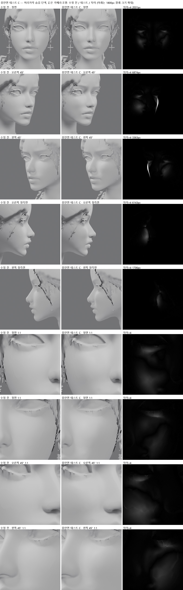
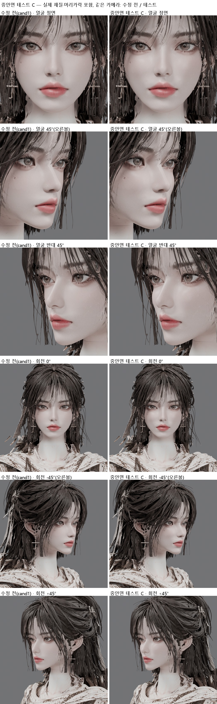
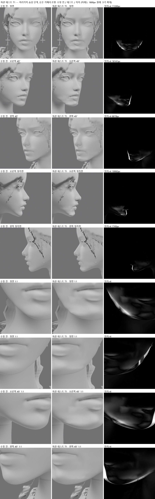
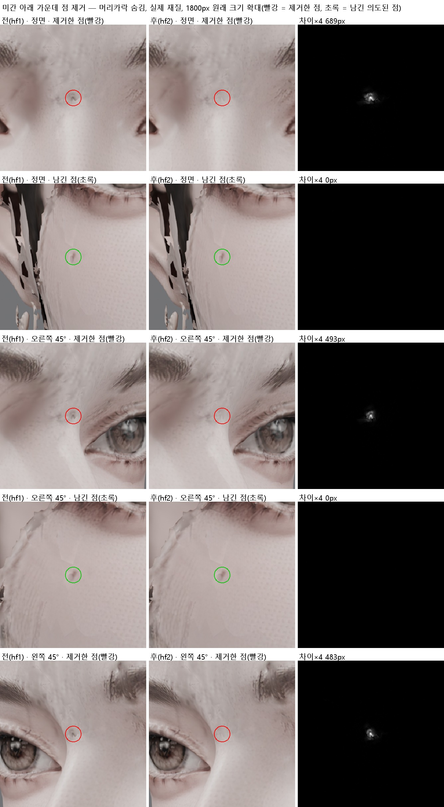
옆머리 톱니 끝 되돌림 — 부분(사용자 채택 판단 대기). 목 뒤 연결부 재구성이 옆쪽 뭉치에도 붙였던 끝 가운데 턱선 아래로 보이던 것(목 둘레 각도 60° 이상 293개)만 되돌렸고, 목 뒤 736개는 그대로 뒀습니다. 얼굴 45°에서 턱선 아래 톱니는 거의 사라졌습니다. 남은 것은 반대 45°의 판 조각 몇 개와, 턱 아래·목 옆 시점에서 다시 보이는 원래의 평평하게 잘린 끝입니다. 목 뒤 모습은 그대로입니다.
구역 교체 시험 — 불통과, 이 방식은 멈춤. 오른쪽 앞머리 바깥–관자놀이–귀 앞–옆머리 끝을 편집 가이드를 따라 새 가닥으로 바꿔 봤지만, 관자놀이~뺨 옆이 흐릿하게 번진 어두운 덩어리가 됐고 원본의 또렷한 가닥이 사라졌습니다. 띠를 여러 겹 빽빽하게 얹어 얼굴 옆을 덮은 것과, 원본 다발 텍스처를 표본점 사이로 이어 읽어 번진 것이 원인입니다. 절차적으로 다시 만든 가닥은 두 번 모두 생성 원본보다 나빴으므로 멈춥니다. 다음 시험은 같은 구역의 좋은 원본 다발 면을 텍스처째 옮겨 가이드를 따라 휘어 빈틈과 파편 자리를 메우는 방식을 한 구역에서만 해 봅니다.
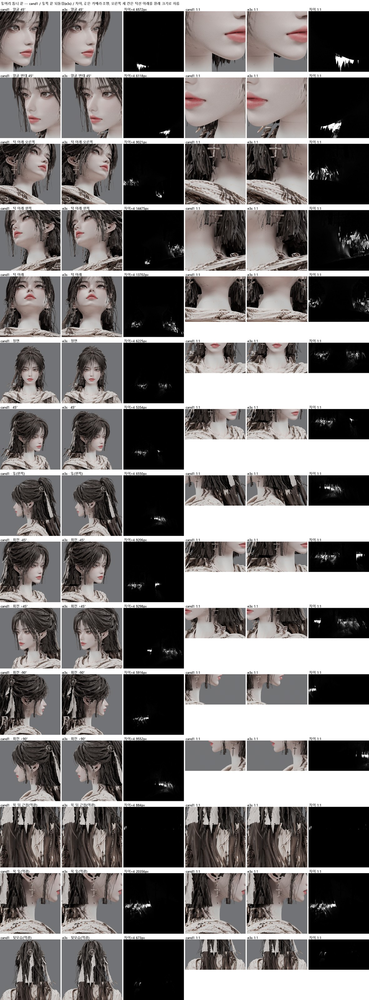
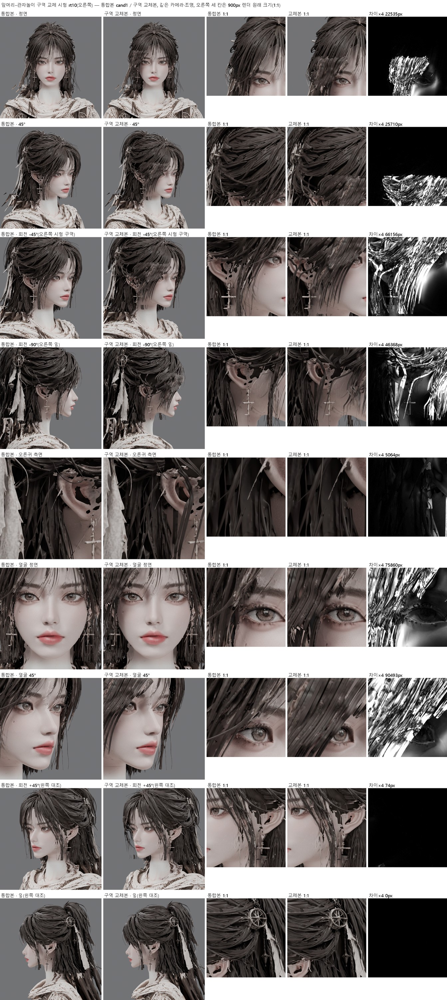
고개를 돌리거나 숙일 때 긴 머리와 목 뒤 연결점이 벌어지는 문제를 가중치만 옮겨 고친 1회차입니다. 형상·UV·얼굴은 그대로입니다. 연결점의 최대 추가 벌어짐은 크게 줄었습니다(숙임 8.2→1.1cm, 왼쪽 회전 10.7→1.6cm, 오른쪽 회전 9.2→1.4cm, 들기 4.1→0.7cm). 그러나 왼쪽 회전을 같은 조건으로 찍어 보니 수정 후(아래 줄)의 뒤 3/4 시점과 옆 시점에 원래 없던 가늘고 긴 대각선 띠가 생겼습니다. 그래서 동작 통과는 불합격으로 판정하고 나머지 자세 촬영은 멈췄습니다. 원인은 짧은 구간 안에서 가중치가 급하게 바뀌는 곳과, 가장 가까운 긴 머리 정점을 따라가며 생긴 불연속이었습니다. 2회차는 같은 방법을 되풀이하지 않고, 겹치는 두 면을 함께 제약하며 옮기는 방식 1개로 시험합니다.
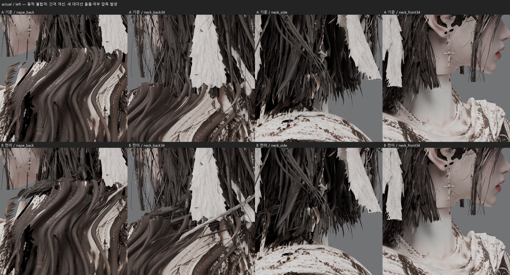
"오른쪽 45°에서 중안면이 뒤로 눌린 인상"을 점검했습니다. 헤어를 숨긴 단색으로 보니 메시 문제가 맞았습니다. 눈 밑부터 입가까지가 평평한 면으로 이어지고 앞볼이 앞으로 나오지 않으며, 좌우는 대칭(차이 ±0.2mm)입니다. 오른쪽 45°에서 더 두드러지는 것은 주 조명이 오른쪽 앞 위에 있어서입니다. 확정 얼굴의 사본에서만 앞볼·눈 밑 오목·입 쪽으로 내려가는 연결면을 앞으로 옮긴 두 판을 만들었습니다. A는 최대 1.5mm, B는 최대 2.2mm입니다. 두 판 모두 아래 눈꺼풀·코·입술·정면 윤곽·입 아래의 이동이 0mm이고, 좌우 차이 0.1mm 안, 위상·UV는 그대로입니다. 정면 1800px 1:1에서 눈·코·입술 영역 화소 차이는 최대 2~5/255입니다. 45°에서 A는 눈 밑 오목이 줄고 앞볼이 아래 눈꺼풀보다 약간 앞으로 나오는 은근한 변화이고, B는 볼륨이 더 보여 45°의 뒤쪽 볼 윤곽이 코 옆에서 앞으로 나옵니다. B에서는 왼쪽 45°의 원래 있던 희미한 UV 이음 음영이 조금 더 드러납니다(새 결함 아님). 전 유지 / A / B / 더 필요 중에서 골라 주세요. 선택 전에는 통합 후보에 넣지 않습니다.
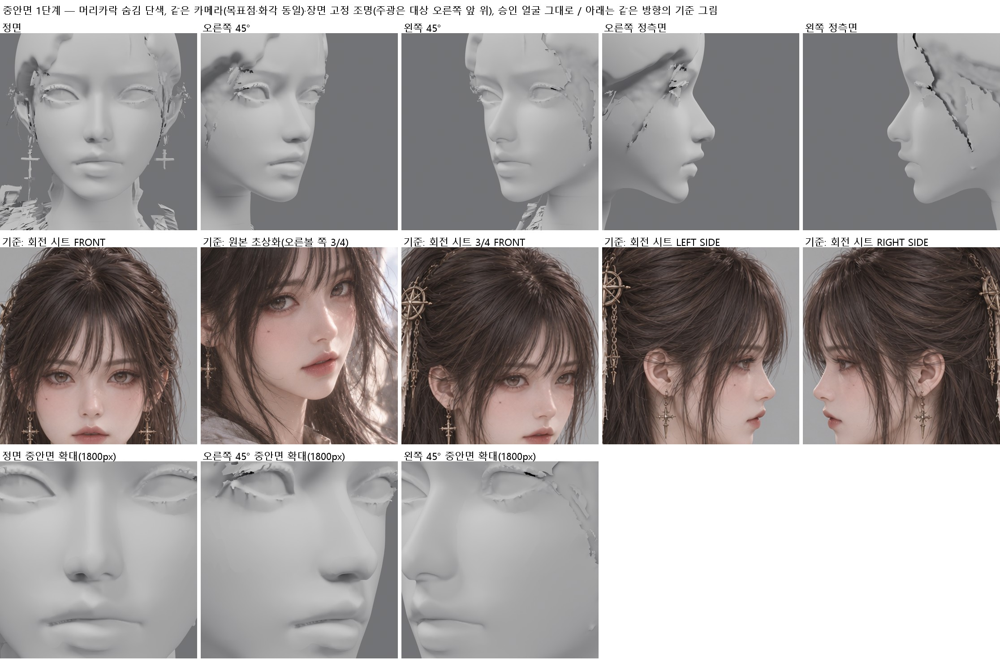
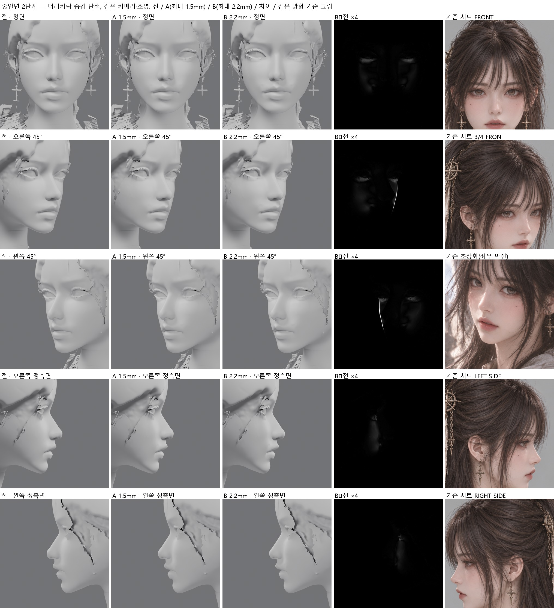
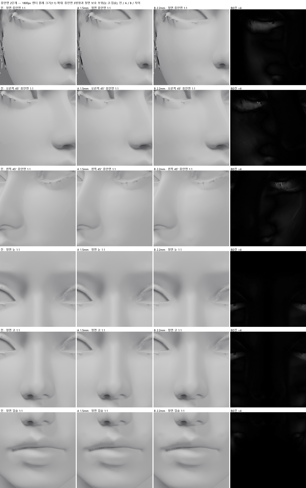
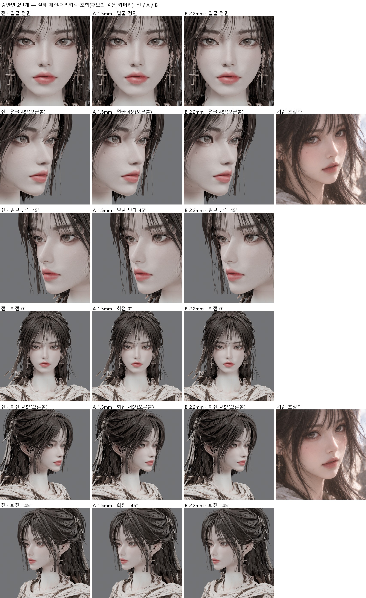
작업지시서의 완료물인 통합 후보 1개입니다. 목 뒤 연결부 재구성(e3), 잔여 조각 숨김(A6, 169 포함), 긴 머리 속 옛 목 피부 조각 숨김, 미간 법선 수정, 얼굴 텍스처 수리판(미간 1회차·목 자국)을 한 파일에 합쳤고, 확정 얼굴의 형상·UV와 원본 파일은 그대로입니다. 표준 9시점과 추가 13시점(턱 아래·양쪽 귀·머리 둘레)에서 구멍·검은 면·두피 노출·모발 손실 없이 통과(정지)했습니다. 목 뒤 7시점과 얼굴 1800px은 부분입니다 — 흰 리본의 평평한 끝, 오른쪽 목 옆 아랫머리 윗단, 미간 섬 안쪽의 옅은 무늬 차이가 남았습니다. 리본 끝 1회차는 끝 텍스처가 한 줄로 몰려 줄무늬가 생겨 불통과였고, 사용자 방향(끝난 수리는 고정, 끝 늘이기 반복 금지)에 따라 더 하지 않고 "기술 수리 부분"으로 남깁니다. 확인 대기: 목 뒤 연결부 재구성이 옆쪽 잘린 뭉치에도 가늘어지는 끝을 붙여서, 얼굴 45°와 턱 아래에서 턱선 아래로 톱니처럼 늘어서 보입니다(앞쪽은 각진 조각이 사라져 개선). 처리 여부는 사용자 판단 항목으로 남깁니다. 이 후보를 통합 고정본으로 두고, 다음 외형 개선은 앞머리–관자놀이 연결부 한 구역의 교체 시험을 같은 조건으로 비교해 판단합니다. 고개를 움직일 때의 연결(가중치)과 Unreal 전달 확인은 이 고정본을 기준으로 따로 진행합니다. 진행은 기술 수리 / 외형 개선 / 동작 통과로 나눠 보고합니다.
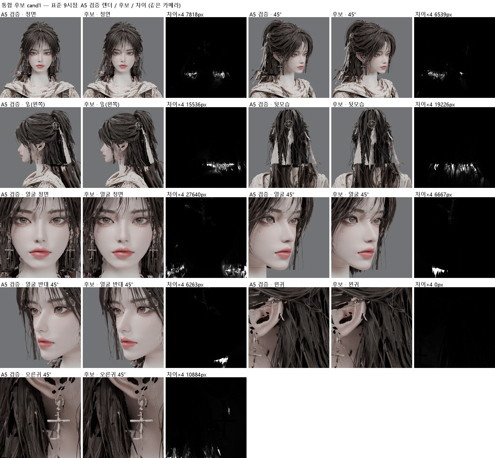
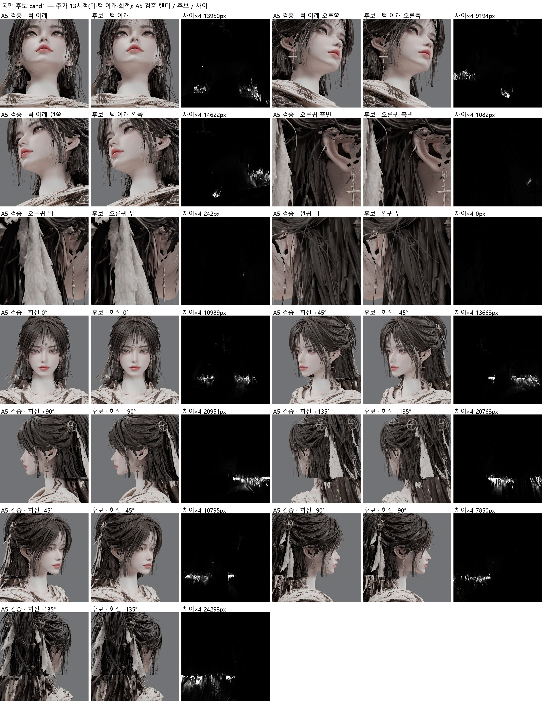
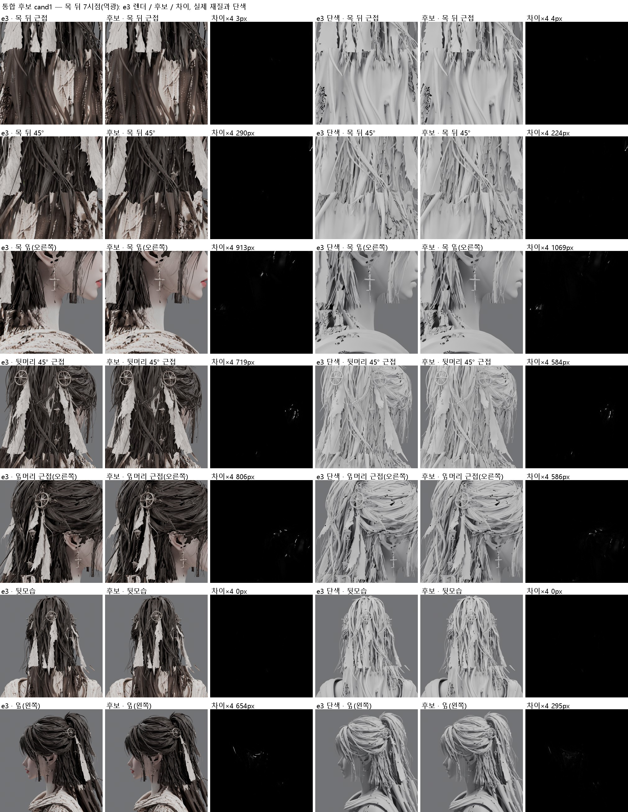
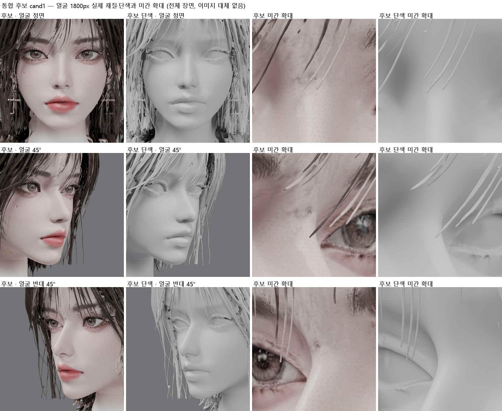
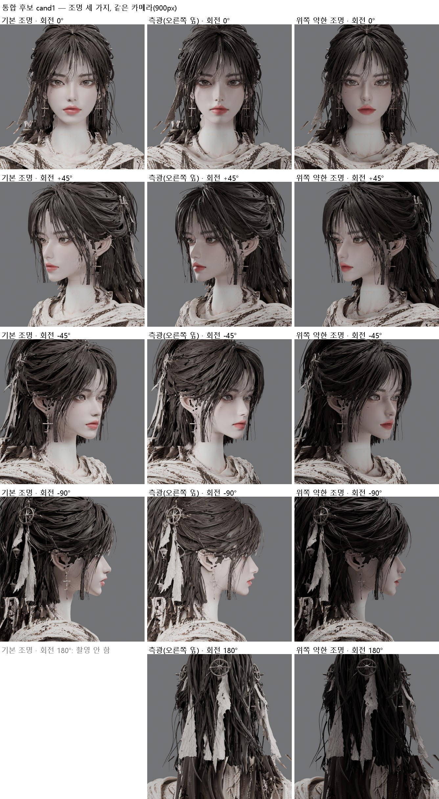
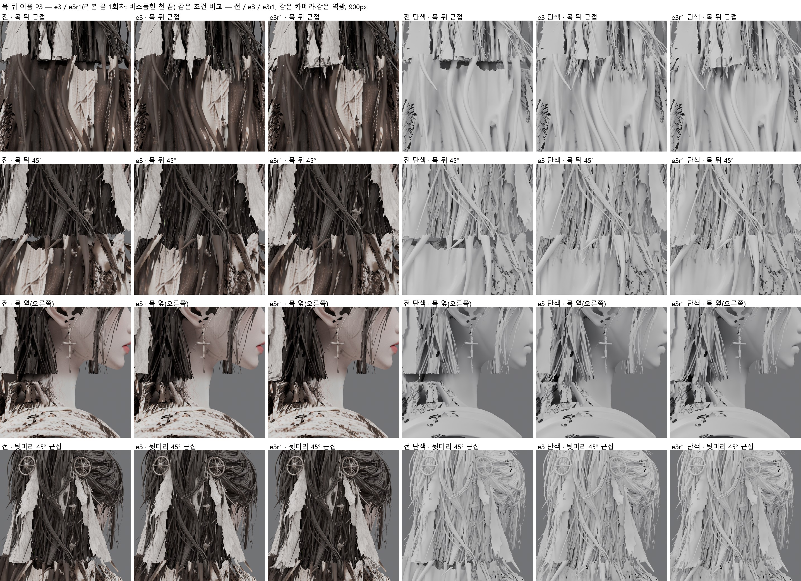
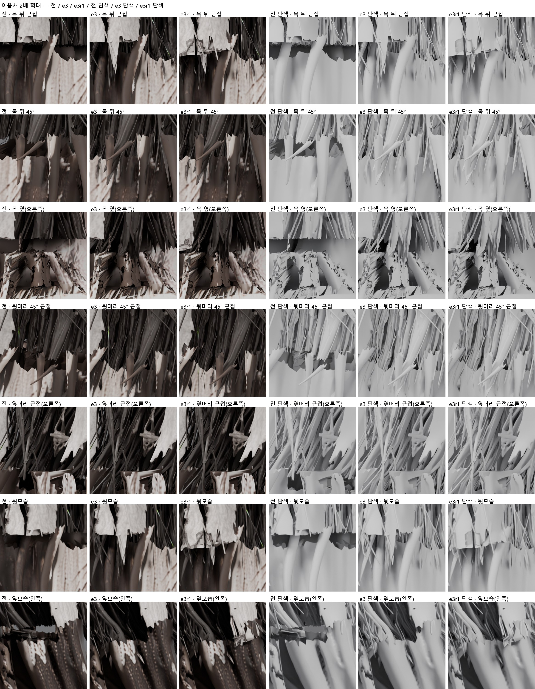
사용자 작업지시서(원인이 확인된 이음·자국은 좁은 마스크 안 텍스처 사본 수리 허용, 같은 방법 두 번에 개선이 없으면 방법 변경, 완료물은 통합 후보 1개)에 따른 결과입니다. 확정 얼굴의 형상·UV·이목구비와 원본 파일은 모두 그대로입니다. 미간 텍스처(부분): 채널을 나눠 보니 선은 주로 바탕색 텍스처에 있었고, 예전 톤 맞춤(효과 작음) 대신 3D에서 이음새 건너편의 같은 지점을 찾아 톤과 모공 무늬를 함께 잇는 방식으로 바꿨습니다. 실제 재질의 이음 단차가 정면 8.37 → 6.81, 45° 9.57 → 8.17로 줄고 톱니 경계가 부드러워졌지만 섬 안쪽 무늬 차이는 남았습니다. 눈썹·눈·점과 마스크 밖 화소는 그대로입니다. 귀 뒤 목 자국(통과): 텍스처에 구워진 세로 줄을 사본에서 3회차까지 정리해 실제 재질에서 사라졌습니다. 흰 조각 169(통과): 목 자국을 고친 뒤 오른쪽 귓불 아래 흰 톱니 조각을 숨겨도 구멍·검은 면·모발 손실이 없어 숨김 목록에 넣었습니다. 목 뒤 연결부(부분): 정점을 옮기는 방식이 두 번 부분 개선에 그쳐, 잘린 머리 끝에서 아래로 가늘어지는 끝을 이어 붙이는 연결부 국소 면 재구성으로 바꿨습니다(리본은 제외, 기존 정점·면은 그대로). 새 수평선이나 빗살 없이 이어졌고 목 뒤 근접 지표가 0.187 → 0.138로 줄었습니다. 남은 것은 흰 리본의 평평하게 잘린 끝과 오른쪽 목 옆 아랫머리 윗단이며, 리본 끝 1회차와 통합 후보 1개를 이어서 만들고 있습니다. 미간 아래 정중선의 작은 점은 보호해 두었고 제거 여부는 사용자 확인 항목입니다.
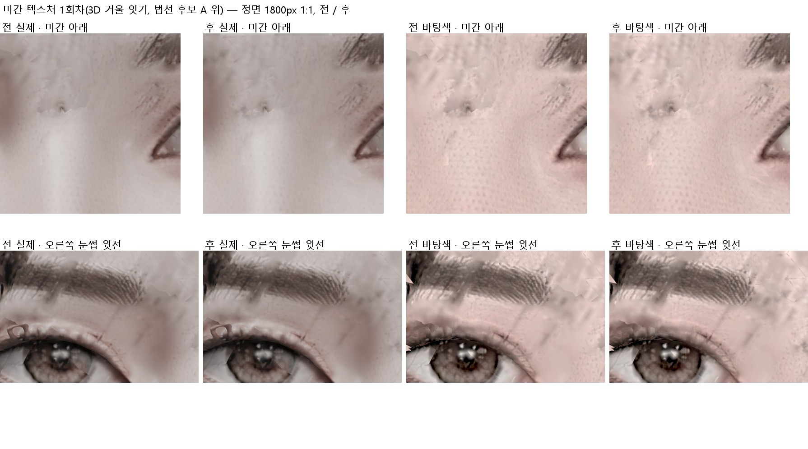
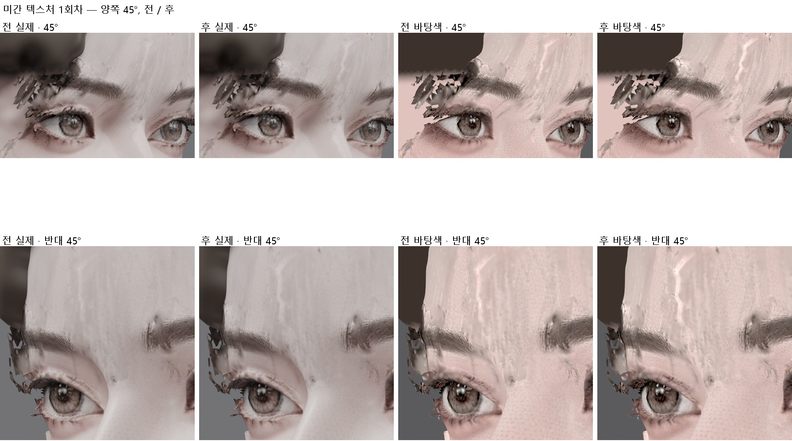
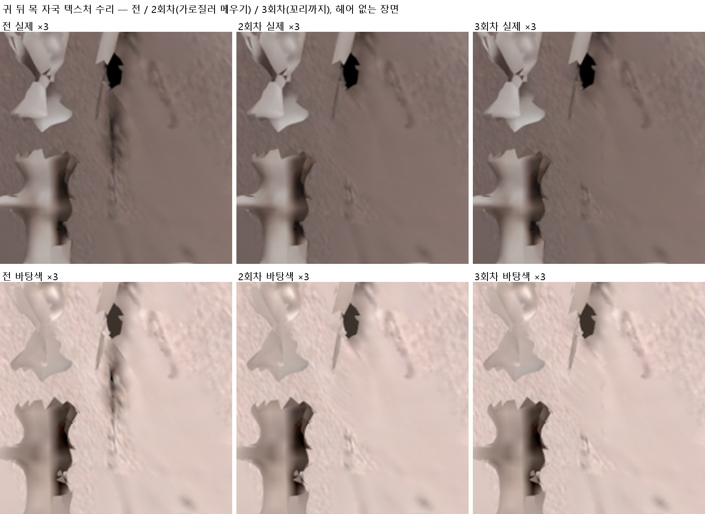
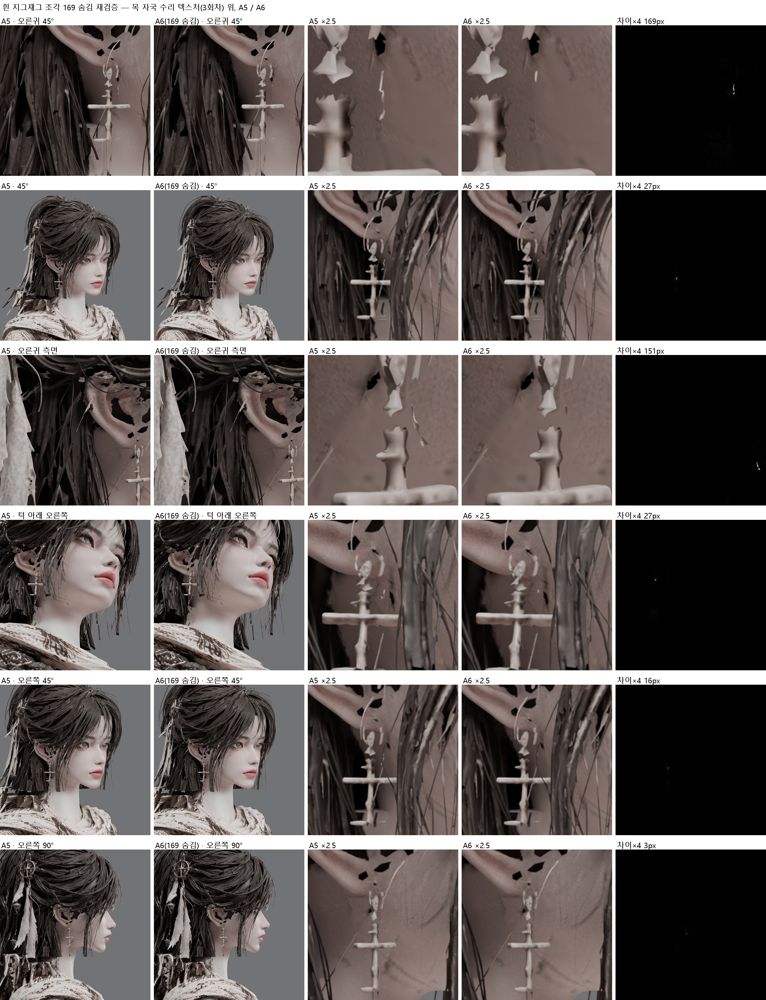
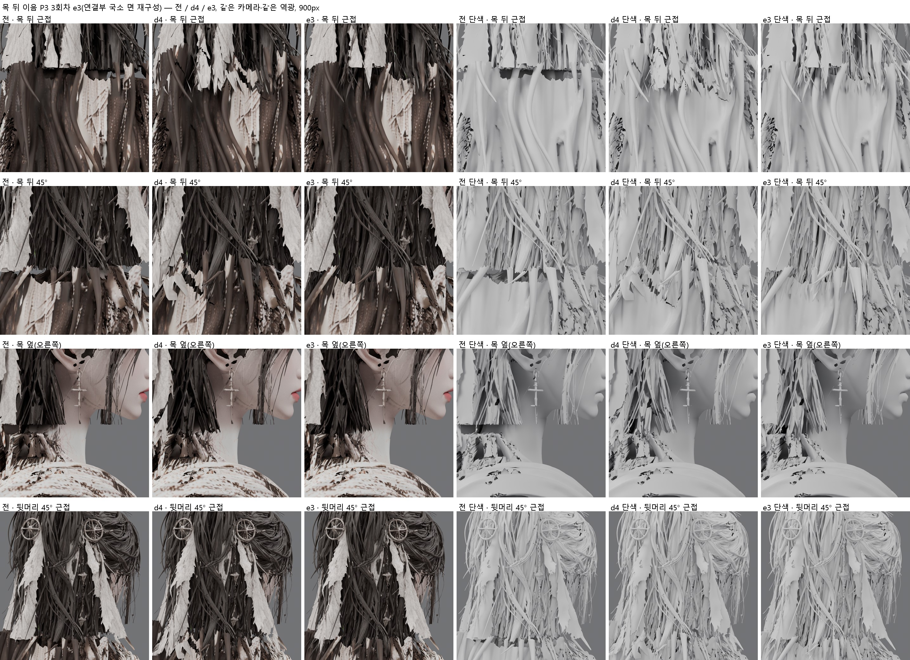
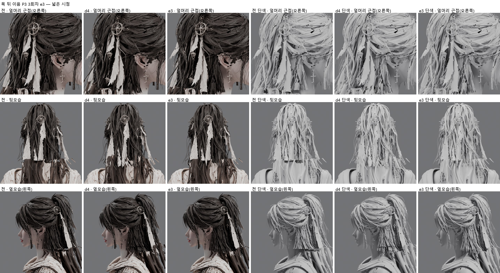
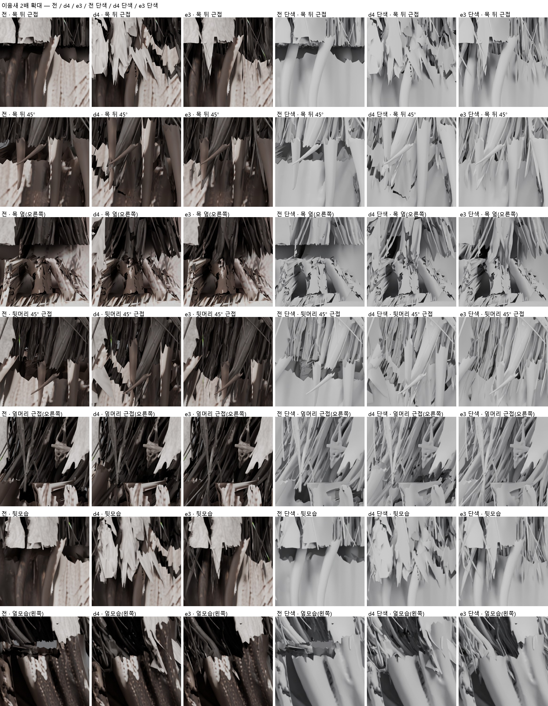
사용자 지시대로 미간 톱니 경계를 법선 후보 A로 별도 사본에서 시험했습니다. 미간 가운데와 오른쪽 눈썹 윗선 두 이음새의 겹친 정점 203개·모서리 616개의 지정 법선만 평균으로 맞췄고, 정점 위치·UV·면 구성·정점 수(36,617)는 그대로이며 눈썹·속눈썹·헤어 면은 손대지 않았습니다(기록 명칭 "형상·UV 유지 / 지정 법선 변경"). 단색 재질에서는 정면·양쪽 45°·조명 두 방향 모두 톱니 음영이 사라졌습니다(이음새 양옆 밝기 차 2.93 → 1.31, 피부 자체 변화 수준 1.24). FBX로 내보내 다시 읽어도 지정 법선이 유지돼 Unreal 전달 시험은 테크니컬 아트가 이어서 합니다. 그러나 실제 피부 재질에서는 UV 섬 사이의 텍스처 톤·결 차이로 톱니 선이 남습니다. 원인이 법선에서 텍스처로 분리된 것이고, 텍스처 덧칠을 반복하지 말라는 지시가 있어 처리 방식(현 상태 수용 / 이음새 한정 1회 잇기 / 다른 방식)은 사용자 결정 항목입니다. 조각 숨김 A3는 추가 시점(오른쪽 귀 옆·뒤, 턱 아래 오른쪽)에서 오른쪽 관자놀이 두피 노출이 드러나 불통과이며, 원인 조각 6개를 더 뺀 A4를 다음에 확인합니다. 오른쪽 귓불 뒤 흰 지그재그 조각을 숨기면 드러나는 목의 세로 어두운 줄은 확정 얼굴 텍스처에 구워진 줄로 확인돼(단색에서는 없음, 조명 방향 무관) 덧칠 금지에 따라 그 조각은 원본대로 둡니다.
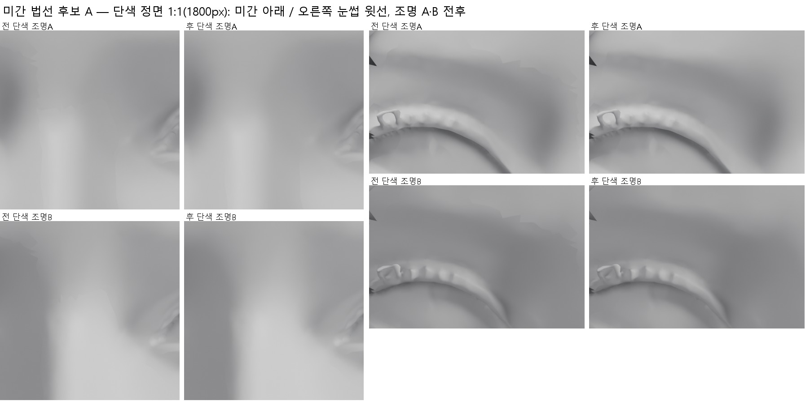
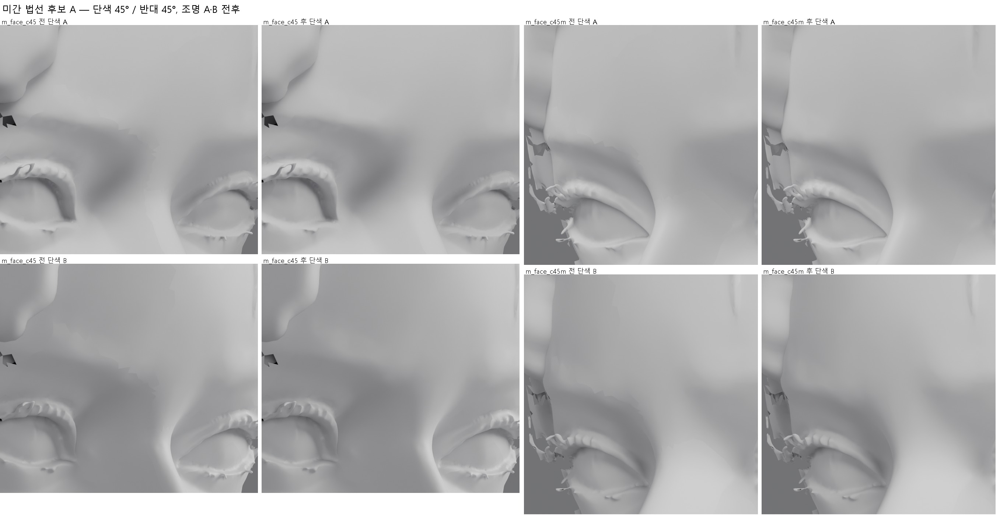
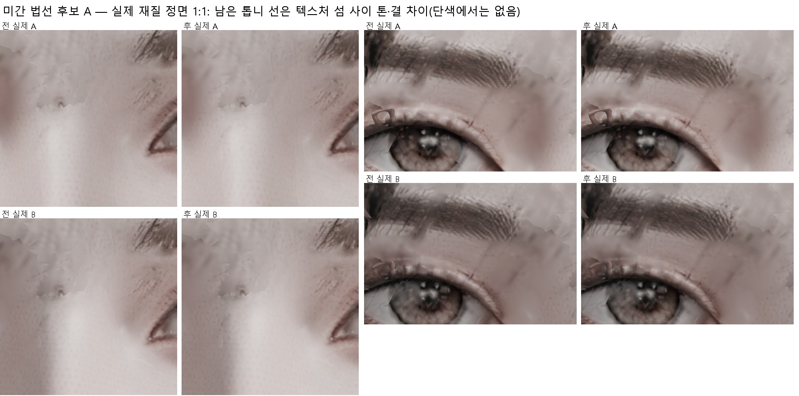
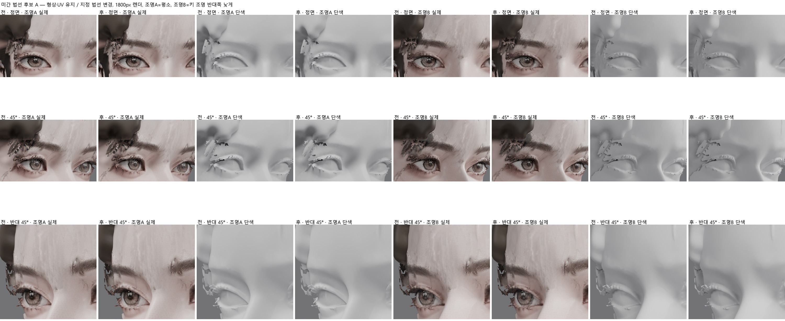
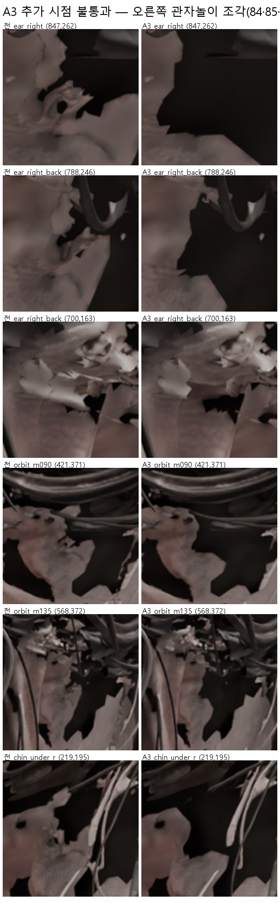
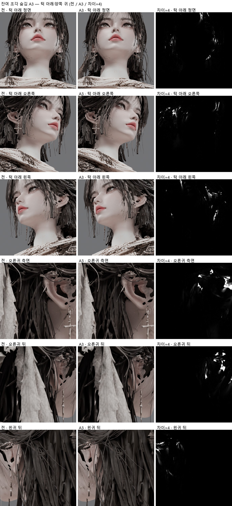
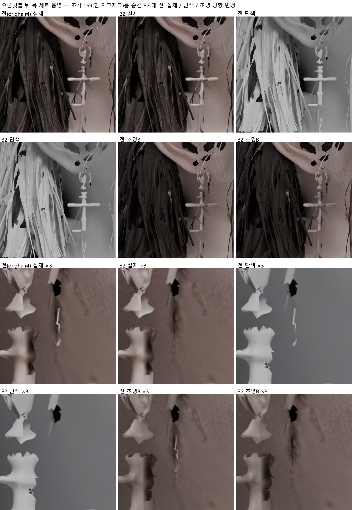
원인을 측정으로 확정했습니다. 윗머리(머리 쪽 생성본)의 아랫단은 뒤쪽 전 구간에서 높이 150.9cm로 평평하게 끝나고, 아랫머리(몸 쪽 생성본)의 윗단은 151.0~151.3cm에서 잘려 있어 서로 다른 생성본이 한 높이에서 맞닿아 있던 것입니다. 원본 파일에도 같은 이음새가 있어 조립 때 지운 면을 되살리는 것으로는 해결되지 않습니다. 시안 d4는 사용자 결정 1항의 조건대로 굵은 띠나 다발을 덧대지 않고 면을 더하거나 지우지도 않으며, 정점만 옮겼습니다. 윗머리 끝 뭉치 536개를 가닥마다 다른 길이(1.0~3.6cm)의 뾰족한 끝으로 늘여 아랫머리 위에 층으로 얹고, 안쪽 6cm 덩어리가 통째로 끝나던 턱은 계단처럼 얇아지게 올렸으며, 아랫머리 윗단 11개 뭉치는 윗머리 밑으로 넣어 고개를 움직여도 겹치게 했습니다(원본 orighair4는 그대로, 새 파일 orighair5, 확정 얼굴 불변). 목 뒤·목 옆·뒷머리 시점에서는 수평 절단선이 사라졌고 새 구멍·가시·목 앞 가림은 없습니다. 다만 정정: 왼쪽 옆모습에서는 옛 절단선보다 약 1cm 위에 새 수평선이 남습니다(목 쪽 안쪽 뭉치를 끝 모양 그대로 올린 탓에 평평한 끝이 한 줄로 늘어선 것으로, 처음 보고한 "7시점 모두 사라짐"은 이 시점에서 틀렸습니다). 그래서 d4는 통과가 아니라 부분 개선입니다. 같은 카메라의 지표로 목 뒤 근접의 수평 경계 비율은 0.187 → 0.052, 위아래 머릿결 방향 차는 12.8° → 4.3°로 줄었고, 다른 시점에서 남은 값은 이음새가 아니라 두건 무늬·리본 끝·두건 경계였습니다. 색 차(아랫머리가 20~30% 밝음)를 줄이는 선택안은 눈에 띄는 효과가 없어 채택하지 않습니다. 남는 점: 단색 재질에서 늘인 끝이 빗살처럼 규칙적으로 보이는 곳이 있고, 흰 리본 띠 끝도 같은 선에서 잘려 있었기 때문에 2~3cm 뾰족하게 길어졌습니다. 고개 동작 확인(시험 바인딩 사본에 d4를 넣어 렌더): 돌리기에서는 윗머리 끝이 아랫머리 위로 미끄러지며 끝 사이에 작은 틈이 보이고, 숙이기에서는 d4 전·후 모두 윗머리가 아랫머리에서 들려 목 뒤에 어두운 틈 띠가 생깁니다(들기는 틈 없음). 원인은 형상이 아니라 시험 바인딩의 가중치 분리(윗머리는 머리 뼈 100%, 아랫머리는 목·척추)이며, 목 마개·몸이 아직 바인딩되지 않은 것도 겹칩니다. 다음: 형상은 d5(안쪽 뭉치 끝마다 다른 길이의 뾰족한 끝으로 평평한 선 제거, 바깥 끝 간격·길이를 따로 뽑아 부드럽게 좁힘, 리본 띠는 1cm 이하만), 동작은 겹침 띠에서 위·아래 헤어의 가중치를 섞는 규칙(테크니컬 아트)으로 잇습니다.
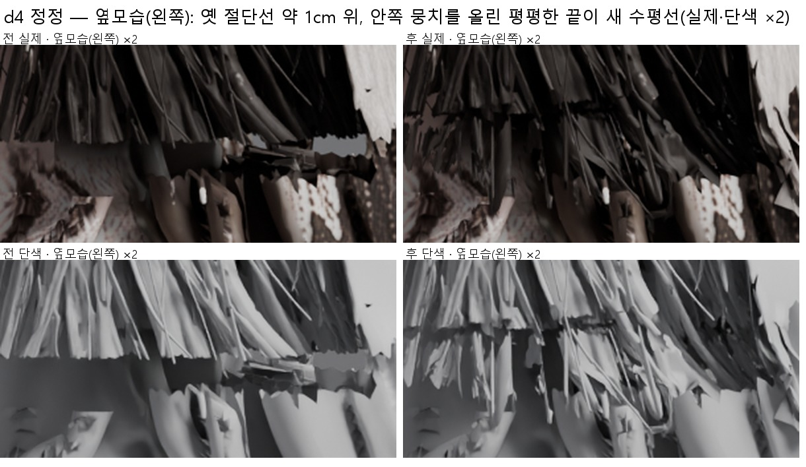
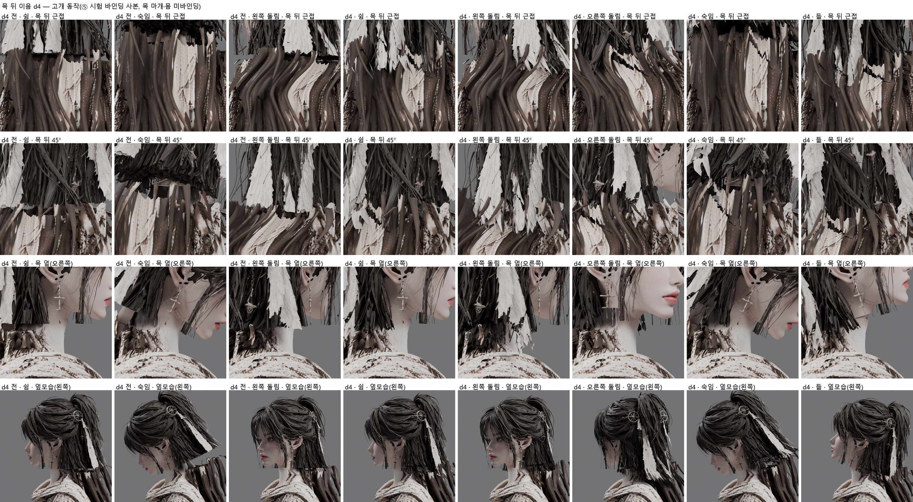
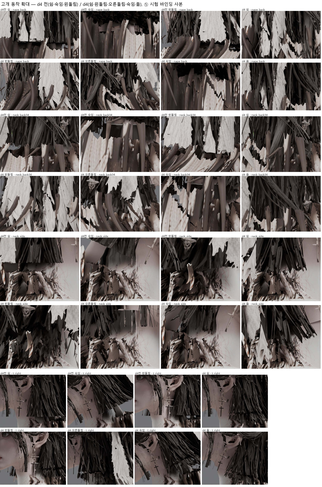
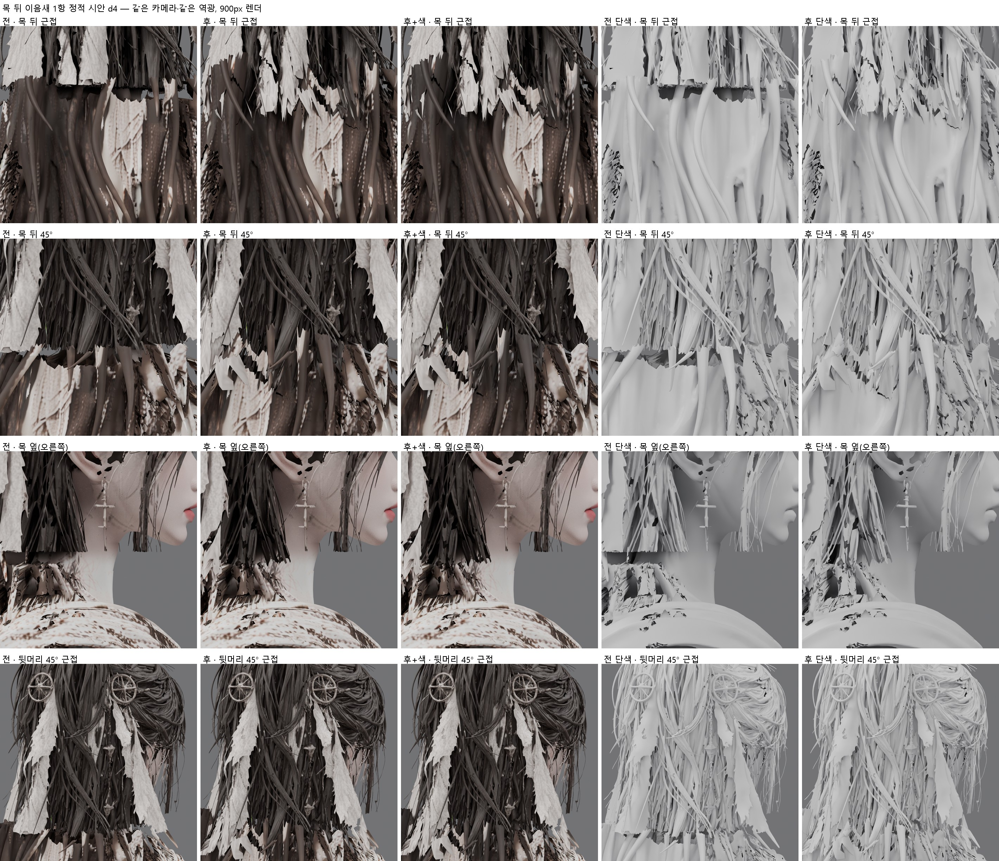
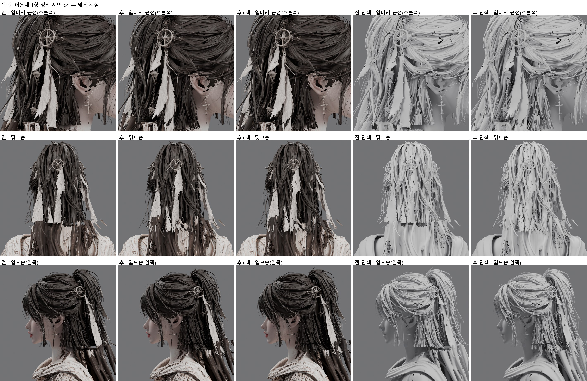
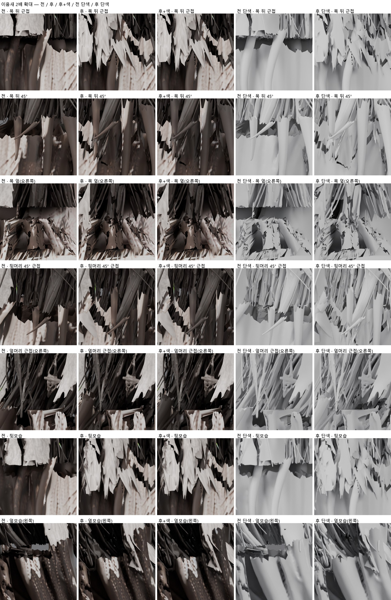
사용자 결정 4항(불필요한 잔여 조각만 숨기고 원본 본체·두피는 유지, 옛 209개 목록은 재사용하지 않음)에 따라 현재 원본 껍질 조합(orighair4) 기준으로 대상을 다시 골랐습니다. 확정 얼굴의 작은 조각 367개와 원본 껍질에서 얼굴 둘레 1cm 안에 떨어진 조각 634개에 조각마다 광선을 쏴서 보이는지, 숨기면 뒤가 두피·피부·머리카락인지 구멍인지 판정했고, 원본 파일은 바꾸지 않고 사본에 숨김만 걸었습니다(머리 해시 불변). 1차 안 A·B는 귀 둘레 세 곳에, 2차 안 A2·B2는 왼쪽 관자놀이(조각을 숨기자 뒤의 질감 없는 두피 면이 드러남)에 새 결함이 생겨 모두 통과시키지 않았고, 피부색 껍질 조각을 넓게 숨기는 B 계열은 실제 머리 가닥과 귀걸이 가로대까지 지워 접었습니다. 원인 조각을 뺀 A3(얼굴 조각 83 + 껍질 조각 19)에서는 관자놀이·귀 둘레 결함이 숨기기 전과 같아졌고, 바뀐 자리 30곳을 4배로 확인해 새 구멍·손상이 없으며 뒷모습 변화는 0입니다. 좋은 변화(이마·관자놀이 피부색 부스러기, 왼쪽 귀 위 뜬 파편, 오른쪽 귓불 뒤 금 간 조각 제거)는 그대로입니다. 남은 확인: 사용자 지시대로 턱 아래·양쪽 귀·머리 둘레 궤도 시점, 그리고 B2 추가분 가운데 유일하게 남은 후보(오른쪽 귓불 뒤 흰 지그재그 조각)와 그 뒤 목 세로 음영의 원인 구분입니다.
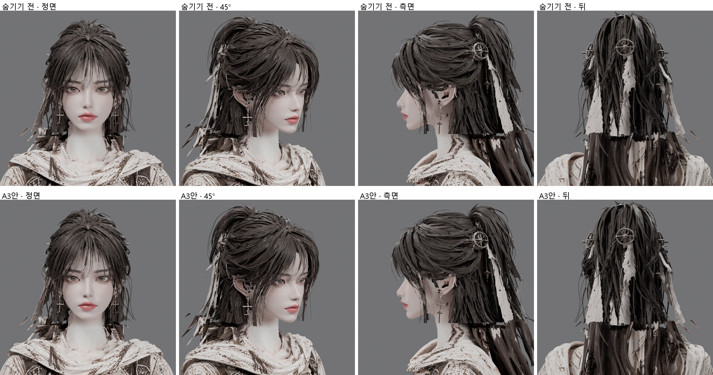
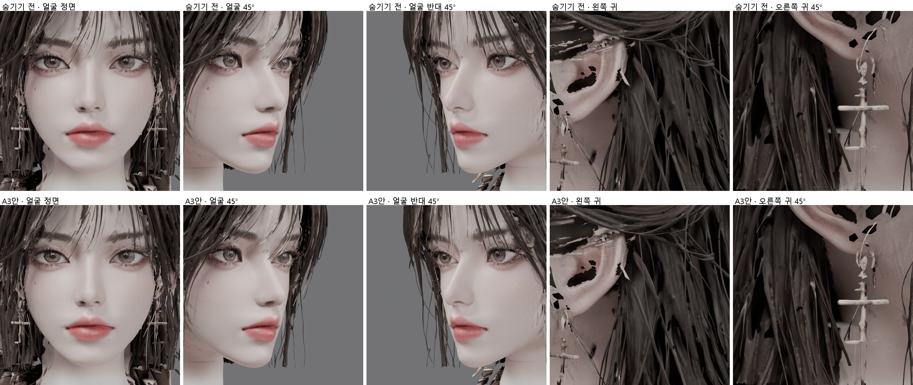
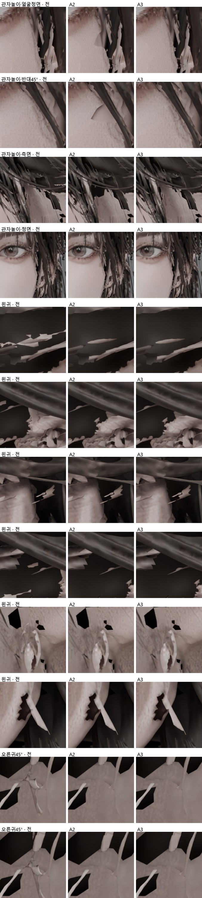
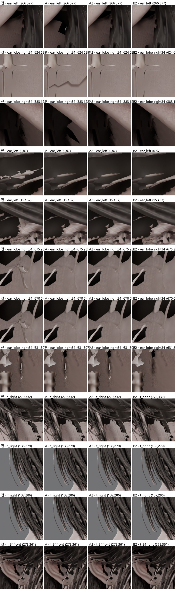
사용자 결정 5항(원본 껍질 유지, 목 뒤 이음새 수정, 눈썹 안쪽 점 제거, 미간 톱니 경계는 텍스처 우선, 잔여 조각만 숨김, 게임용은 별도 사본) 가운데 2·3항의 확인 렌더입니다. 헤어 없는 확정 얼굴을 1800px로 정면·45°·반대 45° 세 시점에서 찍었고, 확정 얼굴 메시·UV·이목구비와 원본 파일은 그대로입니다(머리 해시 불변). 눈썹 안쪽 점(2항)은 끝났습니다. 바뀐 화소는 세 시점 모두 점 둘레 작은 사각형뿐이고 눈썹·속눈썹·눈·볼 점은 그대로입니다. 미간 톱니 경계(3항)는 텍스처로 톤이 부분 개선됐지만 끝나지 않았습니다. 원인은 확정 얼굴 메시가 UV 섬 경계에서 정점이 나뉘어 있어 섬마다 음영 방향(법선)이 따로 계산되는 것으로, 양쪽 정점 위치는 같지만(짝지은 모서리 104쌍) 단색 재질에서도 콧등 위 미간 아래쪽 음영이 이음새를 따라 톱니로 갈립니다. 텍스처로는 없어지지 않으므로 사용자 결정용 후보를 둡니다 — 후보 A(권장): 이음새에서 짝지은 정점끼리 법선을 평균 내 같은 방향을 쓰게 함(대상은 미간 가운데 줄과 오른쪽 눈썹 윗선 두 이음새만, 정점 위치·UV·면 구성·정점 수·머리 해시 불변, 영향은 두 이음새 1~2mm 안 음영만, Unreal에서 사용자 법선 유지 여부는 테크니컬 아트가 확인). 후보 B(비권장): 이음새 정점 용접 — 음영은 자연스러워지나 정점 수가 바뀌어 머리 해시·가중치·전달 기준이 모두 바뀜. 결정 전에는 적용하지 않습니다.
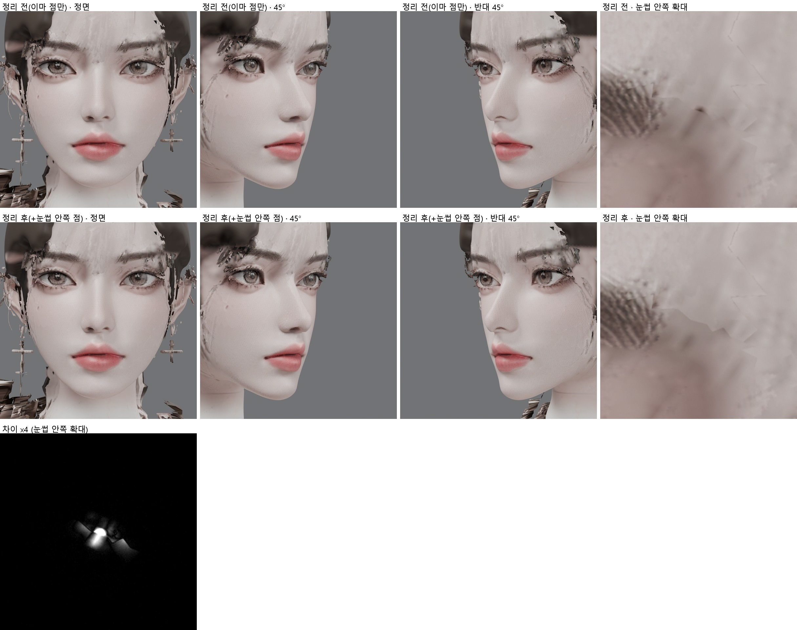
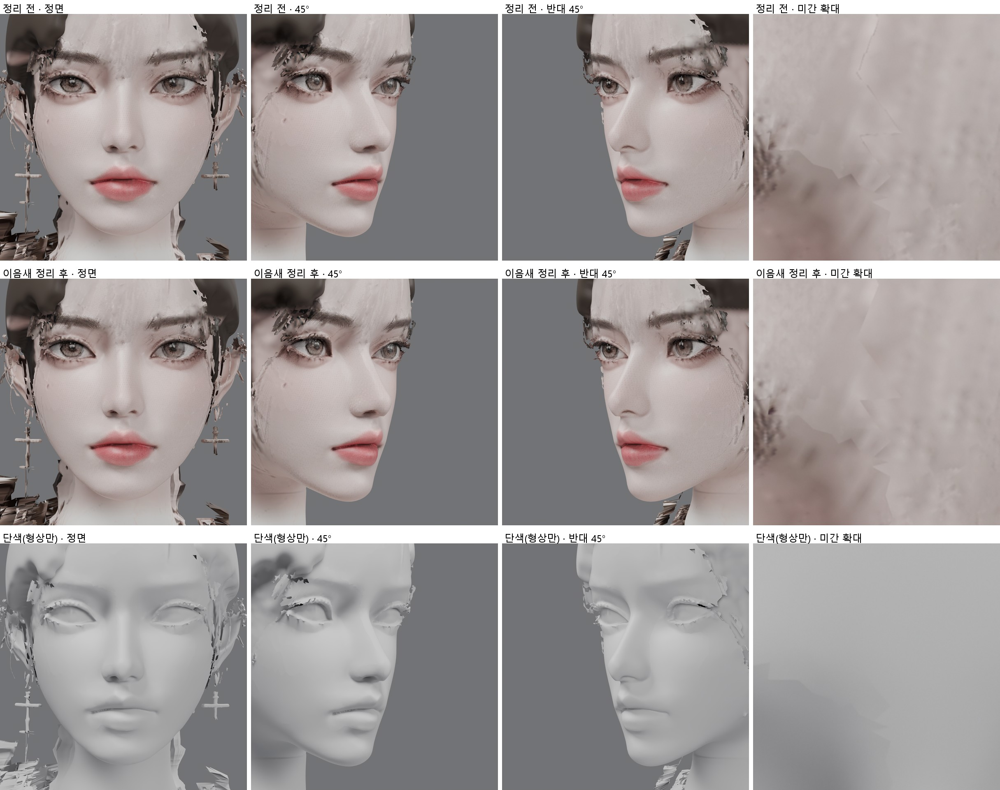
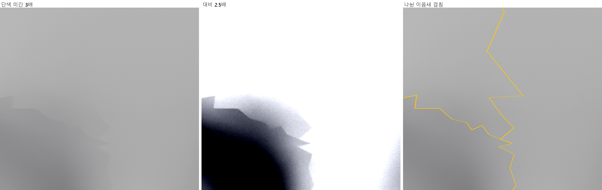
사용자 결정: 헤어는 (다) 원본 헤어 껍질을 살리는 방향으로, 이마 점은 텍스처 사본에서 지웁니다. 확정 얼굴 메시는 그대로(머리 해시 불변)이고 원본 파일도 바꾸지 않았습니다.
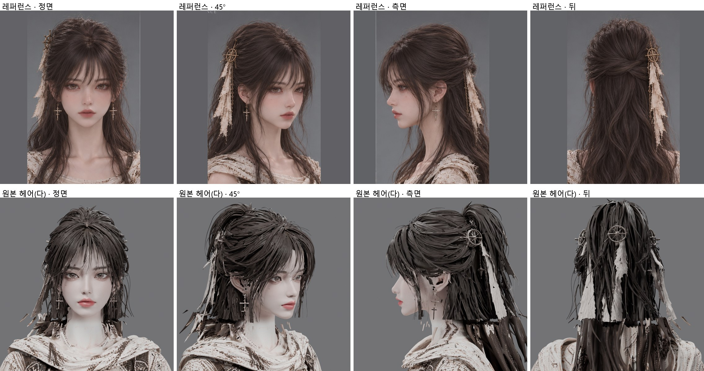
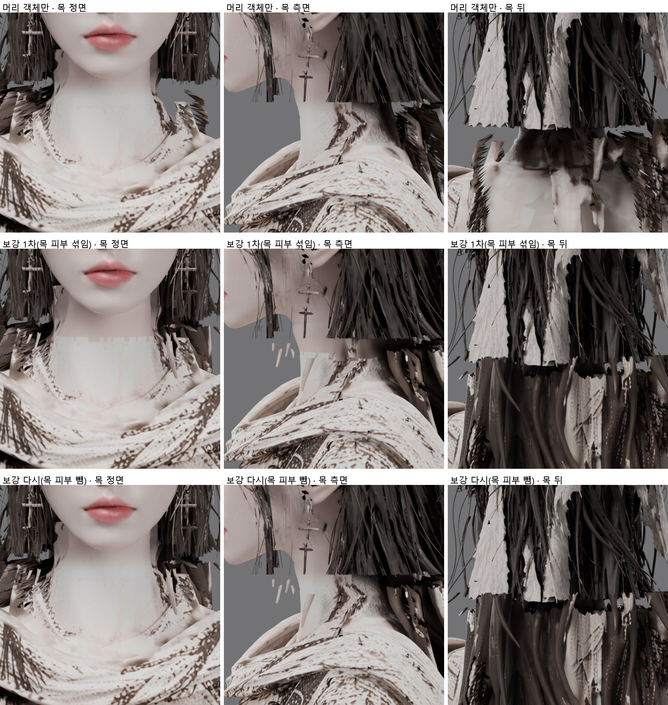
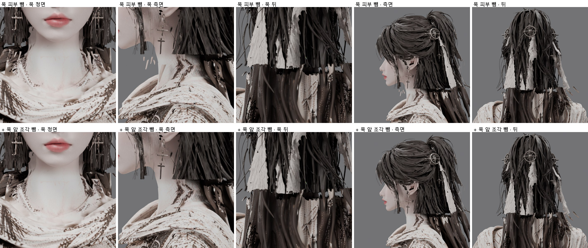
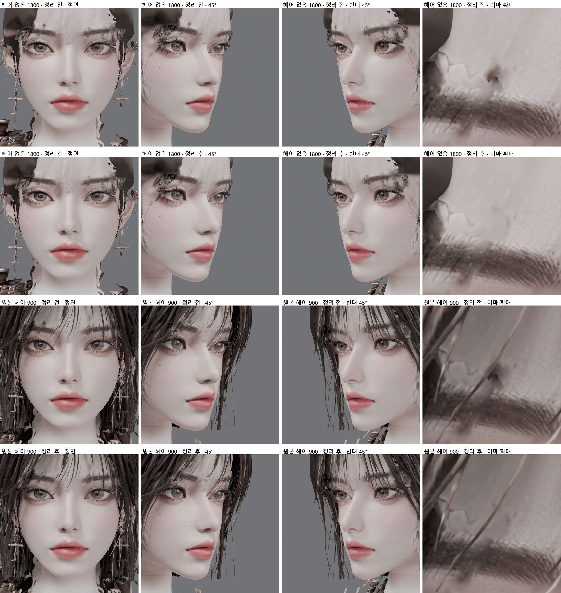
h6w → h6s: 가닥별 난수(구조 보완, 외형 동일). h6s → h6se: 귀 둘레 거리장 교정(측면 화소 1.6%만 변화, 귀 뒤·아래가 조금 촘촘해짐, 외형 개선은 확인되지 않았고 나빠진 곳도 없음 → 구조 보완 판으로만 둠). h6se → h7: 꼬리 퍼짐 1.5 + 표면 붙임 0.5 — 수치(가장자리 단차 1.74 → 0.76cm, 폭 10.4 → 15.3cm)는 좋아졌지만 실제 이미지에서 매듭 바로 아래 기둥은 그대로이고 중간 높이에서 붙여진 꼬리 가닥이 아랫머리와 같은 깊이로 겹쳐 결이 없는 밝은 띠가 생겨 비권고, 꼬리는 h6se 상태로 둡니다. 새로 알게 된 것: 보이는 기둥은 매듭 아래 0~8cm의 볼록한 다발 머리이며, 매듭 바로 아래에서 다발을 얇고 넓게 펴거나 X자 띠 아래로 감추는 방식이 다음 후보입니다(가닥을 같은 깊이로 눌러 붙이는 방식은 얼룩을 만들어 제외). 얼굴은 네 판 모두 동일.
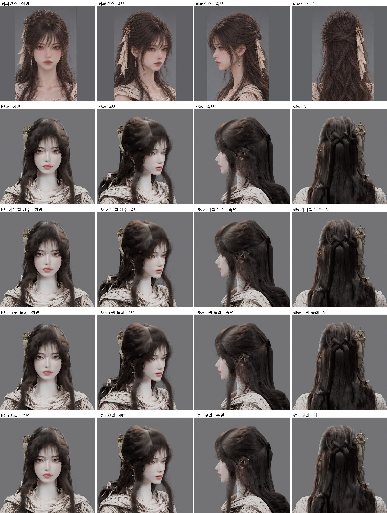
원본 생성 머리 모델의 헤어는 얼굴과 한 표면에 조각·칠해진 껍질(면 424만)입니다. 확정 얼굴 영역만 지우고 남긴 껍질을 확정 얼굴에 얹어 같은 조건으로 찍었습니다(원본·확정 얼굴 불변, 머리 해시 동일). 원본 전체는 정수리 뒤에 높게 묶은 포니테일과 곧고 가는 등 가운데 길이의 가닥, 흰 리본, 이마를 덮는 굵은 앞머리로 레퍼런스 v2(반묶음·X자·웨이브·시스루 앞머리)와 스타일이 다릅니다. 원본 껍질은 긴 뒷부분이 원본 몸 메시에 붙어 있어 이 판에서는 목 높이에서 잘려 보이고, 가까이 보면 납작한 판 조각과 톱니 끝, 관자놀이·귀 둘레의 옛 머리칠 흔적과 떠 있는 조각이 있으며, 메시라 Groom 물리가 되지 않습니다. 현재 h6w는 형태가 레퍼런스에 가깝고 매듭 아래 기둥·윗머리 헬멧 느낌이 일부 남아 있습니다. 선택지: (가) 지금 방식 계속 / (나) 원본 껍질의 흐름을 뽑아 가닥 가이드로 쓰는 절충(약 8~10시간, 목표 스타일을 원본으로 할지 레퍼런스 v2로 할지 결정 필요) / (다) 원본 몸의 긴 머리까지 붙인 보강 비교를 한 번 더 보기(약 3분). 이마 가운데 위 어두운 점은 두 판 모두 같은 자리라 헤어 방식과 무관하며 원인을 따로 확인 중입니다.
h5에서 얼굴 옆 긴 가닥만 평면 S자 웨이브(파장 8~11cm·진폭 0.7~1.2cm)로 바꾼 판입니다. 바뀐 것은 얼굴 옆 가닥과 그 날림뿐이고 나머지 구역은 비트 단위로 같습니다. 귀 둘레 거리장 교정은 윗머리 난수가 밀리는 구조 약점 때문에 보류했고, 가닥마다 고정 개수 난수를 쓰는 보완 뒤에 한 변수로 비교합니다.
h4에서 잠근 앞머리·얼굴 옆·풀린 뒷머리·뒷목·헤어라인 잔머리는 비트 단위로 그대로 두고, 윗머리·X자·꼬리만 바꾼 판입니다. h5x = h4 + X자 연결부(둥글게 꼬인 두 다발) + 리본 안정 배치, h5 = h5x + 정수리 부스스함 완화. 판정: X자 연결부 개선(h4의 납작한 지붕·가운데 V자가 사라지고 레퍼런스처럼 두 다발이 뒤통수에서 교차; 남은 것은 X자 아래 가운데 긴 머리가 기둥처럼 따로 보이고 양옆에 어두운 세로 틈, 정수리에서 모이는 다발 줄무늬가 레퍼런스보다 뚜렷), 정수리 부분 개선(뒤 윤곽 부스스함 감소), 리본 개선(h4의 꺾임이 사라짐). 머리 해시는 모든 판에서 같습니다. 다음 후보 h6은 얼굴 옆 긴 가닥의 S자 웨이브와 귀 옆 거리장 교정(범위를 귀 둘레로 좁힌 뒤 한 변수 비교)입니다.
사용자 측 검토(가이드 중심 구조·부위별 제어·원인 분리)에 따라 h3 위에 세 판을 만들어 같은 카메라·조명·재질·시드로 비교했습니다. h3s = 구조 이관만(부위별 독립 난수·구역 태그·편집 가능한 가이드 층, 늘어뜨림은 기존 방식), h4sdf = 여기에 충돌 거리장 교정만, h4 = 여기에 가이드 방식 늘어뜨림(후드 위로 넘김·S자 웨이브)과 앞머리 다발화. 세 상태: ① 구조 보완 — 대부분 완료(부위 독립 난수·구역 태그·가이드 기준 원본과 편집용 층·잠금 재생성·재현성·Blender 왕복 시험·뿌리 UV 오류 211개 교정·거리장 교정), 부분(가닥 수를 바꿀 때 가이드 모양 유지 미검증, 가이드 층의 그룹·뿌리 UV 속성은 결합 단계에서, 귀 옆 거리장 부호 오류 잔존). ② 외형 개선 — 부분(첫 시험 두 구역): 뒷목 가로 띠가 사라졌고 원인은 거리장의 가짜 덩어리로 확인(교정만으로도 사라짐), 긴 뒷머리가 설계 길이까지 내려가 등을 덮음(끝 높이 중앙값 114cm, 옷에 묻힘 65% → 1.6%, 관통 0.84% → 0.07%), 앞머리는 이마 위가 이어지고 아래는 다발로 갈라져 이마가 비침. 남은 문제: X자 연결부가 납작한 지붕·가운데 V자, 정수리 윤곽 부스스, 얼굴 옆 긴 가닥이 레퍼런스보다 곧음, h4에서 리본 꺾임(자동 배치가 바뀐 뒷머리 영향을 받음, 다음 판에서 고정 배치), 이마 가운데 점·미간 회색 얼룩(원인 미확인), 뿌리가 두피에서 1.5~3mm 뜸. ③ Unreal 전달 검증 — 미실행(인계 파일·대응표·계약은 준비됨). 다음 판 h5 제안: 잠근 앞머리·뒷목은 그대로 두고 X자 연결부(둥근 꼬임)·정수리·리본 고정 배치를 한 구역씩 비교. 머리 껍질 조각 209개 숨김 판은 얼굴·눈썹·속눈썹·머리 해시가 불변이고 피부에 새 구멍이 없으며, 채택 여부는 사용자 결정입니다.
확정 얼굴의 텍스처 정리분(귀·관자놀이 옛 머리칠, 이마·관자놀이 점·얼룩)을 세 갈래로 검증했습니다. ① 형상: 머리 메시 정점 해시가 확정본과 같아 불변. ② 수정 범위: 귀·관자놀이 정리 0.10%, 이마·점 정리 0.18%의 텍셀만 바뀌었고 눈썹·눈·뺨 점 보호 영역 침범은 이마·점 정리에서 0, 귀·관자놀이 정리에서 562텍셀이 보호 판정 안에 들었습니다. ③ 실제 렌더 인상: 같은 장면·카메라·조명에서 텍스처만 세 벌(정리 전 / 귀·관자놀이 정리 / 이마·점 정리)로 바꿔 1800px로 찍어 왼쪽 눈썹 끝·눈꼬리를 2배 확대 비교한 결과, 눈썹·속눈썹·아이라인의 변경 픽셀은 0이고 562텍셀은 눈 보호 타원 가장자리의 관자놀이 피부였습니다. 결론: 되돌릴 것 없음, 현재 텍스처 유지.
h2보다 뒤통수 X자 교차가 나아졌지만 레퍼런스와는 아직 거리가 있습니다. 새로 찾은 원인: 뒷머리·묶음 가닥이 뒷목 옷 후드 윗면에 걸려 제자리에서 길이를 다 써 버려, 묶음 가닥 절반이 높이 125~135cm에서 끝납니다(설계는 102~122cm까지). 이 때문에 뒷목에 가로로 부스스한 띠가 생기고 뒷머리가 짧고 성깁니다. 다음 판 h4는 사용자 측 기획 검토(가이드 중심 구조·부위별 제어·원인 분리·앞머리와 뒷목부터 시험)를 반영해, 후드 위로 넘어가는 늘어뜨림 계산과 정수리 부스스함·긴 웨이브를 함께 고칩니다. 모든 판은 옷 입은 렌더이며 확정 얼굴은 그대로입니다.
h1보다 잔가닥을 줄이고 정수리를 소용돌이로, 관자놀이를 채우고 옆머리를 넓혔으며, 장식을 귀 위쪽 옆뒤로 옮겨 리본이 오른쪽에 걸립니다. 다음 판(h3)에서 뒤통수 X자 교차를 넓은 띠 두 개로, 정수리 뒤 부스스함·측면 볏·목 뒤 수평 꺾임을 고치고 리본을 톱니 가장자리 천 세 겹으로 바꿉니다.
사용자 레퍼런스 v2(뒤통수 X자 꼬임 반묶음·나침반 장식·엉덩이 길이 물결 머리)에 맞춘 첫 판. 아직 레퍼런스와 다른 점이 남아 h2를 만드는 중.
정수리 캡 느낌 줄임, 앞머리·옆머리 가닥 다양화, 반묶음 연결부, 뒷머리 층.
도면 3방향 부피 목표, 시스루 앞머리, 층진 옆머리, 높은 꼬리로 다시 만든 판. 옛 방식(10차)과 비교.
머리카락을 숨긴 상태로 귀·관자놀이의 옛 칠 자국을 피부색으로 정리. 변화는 귀·관자놀이에만.
목 아래 쇄골·근육 음영을 넣고 손목의 고리 모양 턱을 없앤 판. 회색 점검 재질.